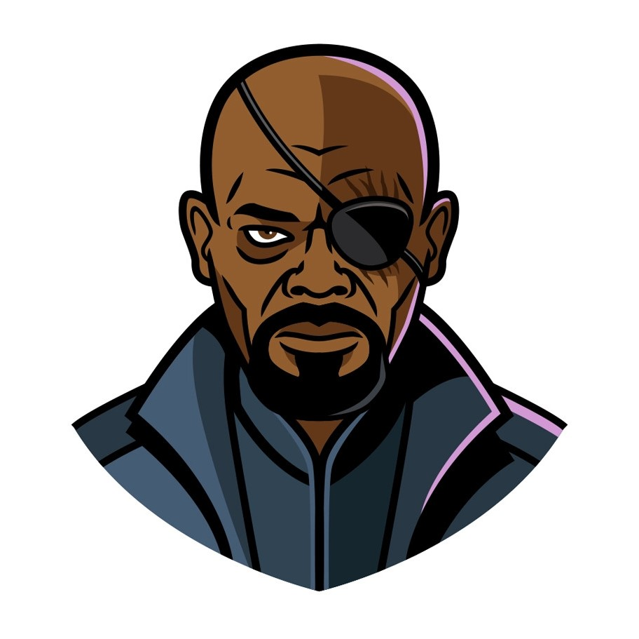

"The principle S.H.I.E.L.D. was founded upon was pure."
"Protection."
"Protection. One word. Sometimes, to protect one man against himself.
Other times, to protect the planet against an alien invasion from another universe.
It's a broad job description."
―Nick Fury and Melinda May[src]

The Strategic Homeland Intervention, Enforcement and Logistics Division, better known by its acronym S.H.I.E.L.D., is an American extra-governmental counter-terrorism and intelligence agency tasked with maintaining both national and global security. Founded in the wake of the Allied victory over the Axis powers and HYDRA in World War II, S.H.I.E.L.D. was organized to protect the United States from all possible threats. With its advanced weapons and extraordinary agents, S.H.I.E.L.D. was maybe the greatest military power on Earth. Following his encounter with Captain Marvel, S.H.I.E.L.D. was run by Nick Fury and the World Security Council in the modern age; S.H.I.E.L.D. had to deal with the significant rise in enhanced individuals, dangerous advanced technology, and alien contact. But all the problems S.H.I.E.L.D. had to solve eventually led to the formation of the Avengers, a response team that was recruited to save the world during the alien invasion of Earth in 2012. The agency became publicly known after the Battle of New York, partially because of the Rising Tide website. In 2014, through the actions of Black Widow and Nick Fury, the world became aware of the fact that S.H.I.E.L.D. was infiltrated and largely controlled by HYDRA.
After the battle in which S.H.I.E.L.D.'s primary headquarters, the Triskelion, was heavily damaged, all of S.H.I.E.L.D.'s classified files were dumped on the Internet, and the agency was disavowed by the United States government and labeled a terrorist organization. Many S.H.I.E.L.D. officials were taken into custody and subjected to rigorous questioning. However, despite the massive manhunt on S.H.I.E.L.D.'s agents, a few operatives scattered across the world in most secret bases remained loyal to their oath, saving the most necessary technology for future use. But the team most responsible for the survival of S.H.I.E.L.D. was the team of Agent Phil Coulson, who valiantly led his teammates against the forces of HYDRA led by the traitors John Garrett and Grant Ward, winning the battle in which Garrett's plan ultimately failed. After that battle, Fury appointed Phil Coulson the new director of S.H.I.E.L.D. and tasked him with rebuilding the agency from scratch, becoming a shadow parapolicial agency. Now working from the shadows and hunted by almost every army in the world, Coulson used his oldteam as the core of S.H.I.E.L.D. and recruited mercenaries, former agents, and others to help fill the organization's ranks while simultaneously continuing the fight against HYDRA. At the same time, another faction of S.H.I.E.L.D. arose, this one led by Robert Gonzales, who refused to accept Coulson's authority, believing his faction to be the only "real S.H.I.E.L.D." After the Battle for the Kree City, Gonzales' faction revealed its existence, attacking and capturing Coulson's base, the Playground. This ignited an open conflict between the two S.H.I.E.L.D. factions. However, after successfully working together to attack and destroy the Arctic HYDRA Research Facility, Coulson successfully proposed a merger of the two factions which occurred in mid-2015. But the peace did not last long, as the Inhumans, a super-powered humanoid race led by Jiaying, declared war on S.H.I.E.L.D. The fight was short, and S.H.I.E.L.D. was able to prevent any further damage. After the war, Coulson started a new program of recruiting and training Inhumans for a team to deal with various threats. The Inhuman Outbreak soon followed, and S.H.I.E.L.D. had to stand against the implications it caused. Following the exposure and the abrupt end of HYDRA's infiltration of the ATCU, S.H.I.E.L.D. was semi-legalized as the black ops division of Matthew Ellis' administration, with the ATCU serving as S.H.I.E.L.D.'s public face. With HYDRA suffering a crippling blow, S.H.I.E.L.D. became aware of the dark Inhuman, Hive, and soon had to fight against his Inhuman army, which intended to transform all humanity into Inhumans. As the war with Hive reached its end, Lincoln Campbell sacrificed his life to destroy Hive in a nuclear explosion in space.